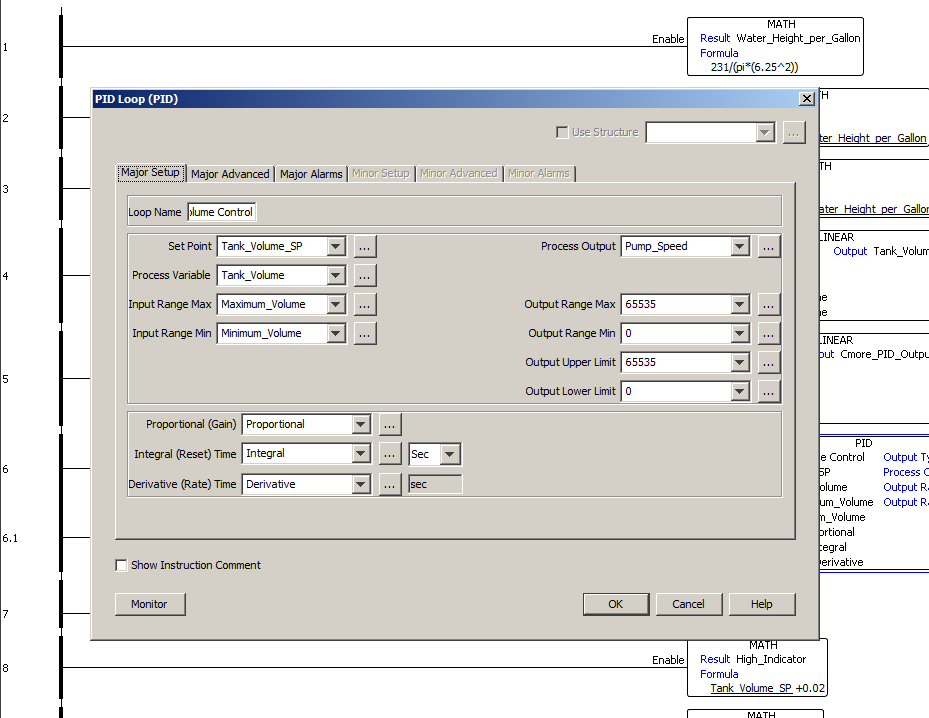
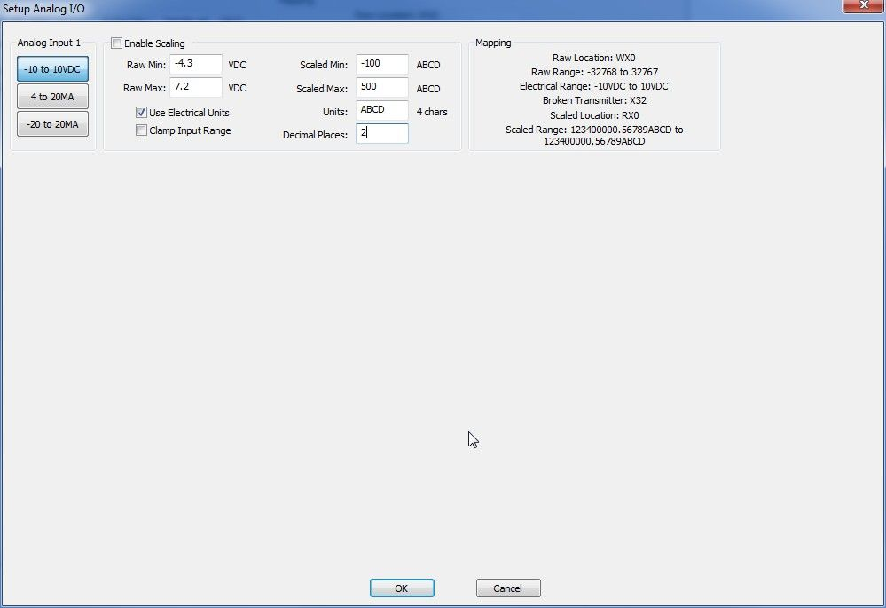
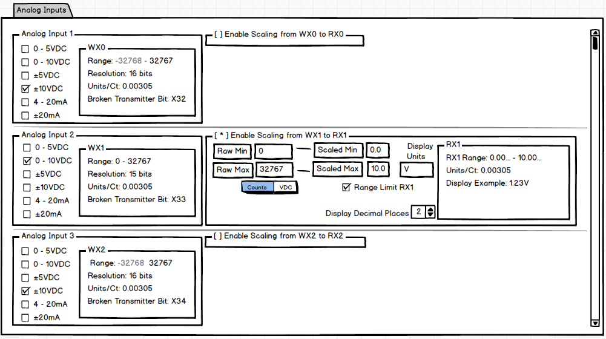

-

This is the search results display in a PLC. A project in this programming software has many layers, so displaying results is much more complex than on a flat document such as a word processor or other text editor. I used a familiar tree structure to categorize the search results. The user can quickly and intuitively find the search results in context. They can also easily hide large sets of results to focus the scope.
-

This is the interface for setting up a PID instruction in a PLC. This is a very complicated instruction with many of the available functionality being optinoal. To keep it as simple as possible, the options were grouped and divided among multiple tabs.
Only the options on the first tab are required for most applications. Options get progressively less common going deeper in the tabs.
-

BEFORE: This is the first draft I received from the vendor of a configuration screen for an analog input module for a PLC. They asked for our assistance. The following slide shows my suggested layout.
-

AFTER: On my wireframe, the required selections are all visible. Optional selections are hidden until enabled to avoid confusion. The UI displays all the pertinent information to show how the selected options will affect the system. Otherwise, some users would have to reach for a calculator to be sure what to expect.
In the Scaling area, go-together fields are close together. Visual cues indicate the workflow, left to right. It ends with a display of the data formatting that will result from the user's selections.
-
This brief video gives an overview of my most recent project. This is a wireframe of a completely re-imagined front end for a Programmable Logic Controller's (PLC) System Configuration. This project is still underway, so there is no final image to show. The video offers an overview of my process for designing this particular interface.